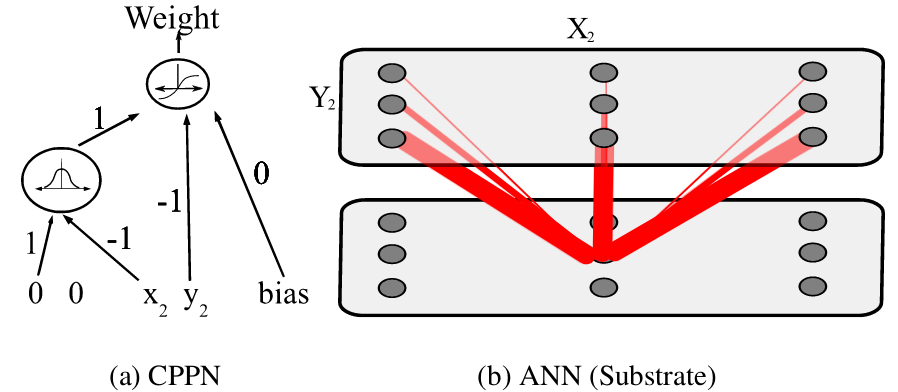

Evolutionary Computation
Evolution of Neural Networks
Motivations for neuroevolution

Miikkulainen, Risto. "Evolution of neural networks." Proceedings of the Genetic and Evolutionary Computation Conference Companion. 2017.
Neuron Model

C. Stangor and J. Walinga. Introduction to Psychology.
[BC open textbook
collection]. Flat World Knowledge, L.L.C., 2015.
Artificial Neural Networks


cs231n.github.io
Neuroevolution

Gruau, Frederic, and Darrell Whitley. "Adding learning to the cellular development of neural networks: Evolution and the Baldwin effect." Evolutionary computation 1.3 (1993): 213-233. |

Fleischer, Kurt, and Alan H. Barr. "A simulation testbed for the study of multicellular development: The multiple mechanisms of morphogenesis." 1994 |
Neuroevolution

Stanley, Kenneth O., and Risto Miikkulainen. "Evolving neural networks through augmenting topologies." Evolutionary computation 10.2 (2002): 99-127 |

Miller, Julian F., Dennis G. Wilson, and Sylvain Cussat-Blanc. "Evolving Developmental Programs That Build Neural Networks for Solving Multiple Problems." Genetic Programming Theory and Practice XVI. Springer, Cham, 2019. 137-178. |
Neuroevolution

Miikkulainen, Risto. "Evolution of neural networks." Proceedings of the Genetic and Evolutionary Computation Conference Companion. 2017.
Evolution of Neural Structure

Miikkulainen, Risto. "Evolution of neural networks." Proceedings of the Genetic and Evolutionary Computation Conference Companion. 2017.
Problems with Neuroevolution

Miikkulainen, Risto. "Evolution of neural networks." Proceedings of the Genetic and Evolutionary Computation Conference Companion. 2017.
Direct Encoding
Neural network structure or weights are directly encoded in genome: NEAT
Stanley, Kenneth O., and Risto Miikkulainen. "Evolving neural networks through augmenting topologies." Evolutionary computation 10.2 (2002): 99-127
What is NEAT?
NeuroEvolution of Augmenting Topologies (NEAT)Evolves both:
- Network weights
- Network topology (structure)
Starts from simple networks and gradually complexifies
Key idea: begin minimal and add complexity only when needed
Genome Representation
Neural networks are encoded as genomesTwo types of genes:
- Node genes (neurons)
- Connection genes (synapses)
Each connection gene contains:
- Input node
- Output node
- Weight
- Enabled / disabled flag
- Innovation number
Direct encoding: each gene directly maps to the network
Innovation Numbers
Problem: how to align genes during crossover?Solution: innovation numbers
- Each new structural mutation gets a unique ID
- Tracks historical origin of genes
During crossover:
- Matching genes → same innovation number
- Disjoint genes → non-overlapping
- Excess genes → beyond the other parent
Enables meaningful crossover between different topologies
Structural Mutations
NEAT evolves topology through mutationsAdd connection:
- Connect two previously unconnected nodes
Add node:
- Split an existing connection
- Disable old connection
- Insert new node
- Add two new connections
Complexity increases gradually while preserving learned behavior
Speciation
Problem: new structures are initially weakSolution: speciation
- Group similar genomes into species
- Competition happens within species
Benefits:
- Protects innovation
- Maintains diversity
- Avoids premature convergence
Fitness Sharing
Individuals share fitness within their speciesAdjusted fitness:
- Penalizes crowded species
- Rewards smaller species
Outcome:
- Maintains multiple strategies
- Encourages exploration
Indirect Encoding

Neural network structure or weights are the result of developing the genome: Cellular Encoding, HyperNEAT
Miikkulainen, Risto. "Evolution of neural networks." Proceedings of the Genetic and Evolutionary Computation Conference Companion. 2017, from Gruau, Frederic, and Darrell Whitley. "Adding learning to the cellular development of neural networks: Evolution and the Baldwin effect." Evolutionary computation 1.3 (1993): 213-233.
Direct vs Indirect Encoding
Direct encoding (NEAT):- One gene = one component
- Explicit representation
Indirect encoding:
- Genes describe rules or patterns
- Network is generated (not stored)
Advantages:
- More compact genomes
- Regular and repeating structures
- Better scalability
Limitations of Direct Encoding
Direct encoding struggles with:- Large networks
- Regular patterns (e.g., symmetry)
- Repeating structures
Because:
- Each connection must be encoded individually
Indirect encoding addresses these limitations
What is HyperNEAT?
Extension of NEAT using indirect encodingEvolves a function instead of a network:
- Called a CPPN (Compositional Pattern Producing Network)

The CPPN:
- Takes coordinates as input
- Outputs connection weights
- Generates connectivity patterns instead of listing connections
How HyperNEAT Works
Each neuron is assigned coordinates in spaceFor each pair of neurons:
- Input: (x₁, y₁, x₂, y₂)
- CPPN outputs connection weight
This creates:
- Structured connectivity
- Spatial regularities
Example patterns:
- Symmetry
- Repetition
- Local connectivity
Why HyperNEAT is Powerful
Exploits geometry of the problemAdvantages:
- Scales to large networks
- Produces regular patterns
- Reuses structure automatically
Compared to NEAT:
- NEAT: explicit connections
- HyperNEAT: generated connections
Takeaway
Direct encoding:- Precise but not scalable
Indirect encoding:
- Compact and expressive
- Captures patterns and regularities
HyperNEAT = NEAT + generative encoding of connectivity
Evolution of Deep Neural Networks


Weight optimization only using Evolutionary Strategies
Salimans, Tim, et al. "Evolution strategies as a scalable alternative to reinforcement learning." arXiv preprint arXiv:1703.03864 (2017).